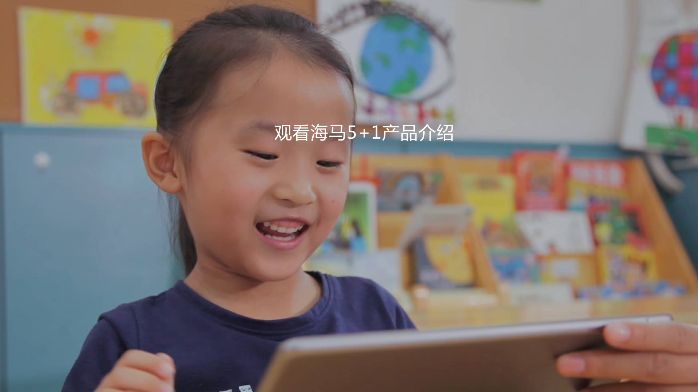

<!--
    @require "detail.css"
-->

<div class="detail-container" scroll-trigger="changeVideo()" trigger-run trigger-persist trigger-active="!scrollDisabled">
	<article>
		<div class="head">
			<h1 class="title">亲亲宝贝A</h1>
			<div class="info">
				<span class="time js-time">6-12个月</span>
			</div>
		</div>
		<div class="content">
			<div class="page js-page on">
				<div class="videogular-container">
			    <videogular vg-player-ready="onPlayerReady($API)" vg-plays-inline="true" style="background-color:#ffffff; height:auto;" ng-class="{show: isPlay, hide: isHide}">
			      <vg-media vg-src="config.sources"
			          vg-tracks="config.tracks" style="height:auto;">
			      </vg-media>
			 
			      <vg-controls>
			        <vg-play-pause-button></vg-play-pause-button>
			        <vg-time-display>{{ currentTime | date:'mm:ss' }}</vg-time-display>
			        <vg-scrub-bar>
			          <vg-scrub-bar-current-time></vg-scrub-bar-current-time>
			        </vg-scrub-bar>
			        <vg-time-display>{{ timeLeft | date:'mm:ss' }}</vg-time-display>
			        <vg-volume>
			          <vg-mute-button></vg-mute-button>
			          <vg-volume-bar></vg-volume-bar>
			        </vg-volume>
			        <vg-fullscreen-button></vg-fullscreen-button>
			      </vg-controls>
			 
			      <vg-overlay-play></vg-overlay-play>
			      <vg-buffering></vg-buffering>
			      <vg-poster vg-url='config.plugins.poster'></vg-poster>
			    </videogular>
			    
			    <div class="spe-img img-play" ng-click="playVideo()" ng-hide="isPlay"></div>
			  </div>
				<p>针对这一月龄宝宝注意力维持较短的特征，“亲亲宝贝A”安排单项活动时间短，活动项目多样的课程内容，吸引宝宝的专注力，充分利用课堂时间。在“教师指导活动”、“充气滚筒”、“俯卧时间”、“宝宝瑜伽”等运动环节中，宝贝们身体的力量和稳定性得到提高，生长发育得到促进。而“彩虹伞”、“美式手语”、“主题故事阅读”等环节，则给予婴儿脑细胞以适宜的刺激，增强感知能力与智能发育。</p>
			</div>
		</div>
	</article>
</div>
